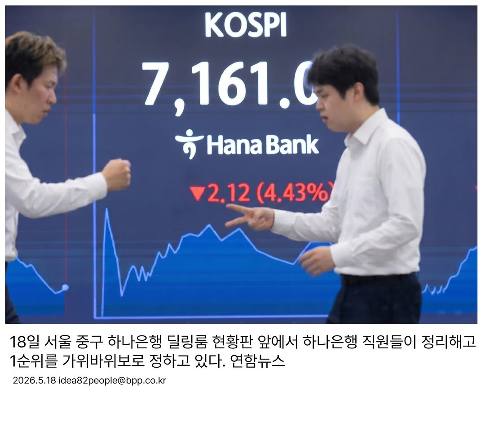

1/3
1/3저는 귀빠지고 지금껏 콩국수를 먹어본 적이 없습니다
하지만 커피는 거의 달고 사는데요
커피콩도 콩이잖슴 근데?
아이스 아메리카노에 소면 넣으면 그게 콩국수 아닐까요?
ㅋㅋ미친 천재; 곧 외계인이 납치할 듯
제가 만들 여력까진 없어서
메가커피가 만들어 줬으면 하는 마음으로 만들었습니다 굿
Instagram에서 열기
🔍 분석 보기 (체크 항목이 BSD/CCD로 전송)
🔍 분석됨📑 6장
저도 코르티스처럼 새깅해서 멋쟁이 소리 듣고 싶은데
하지만 멋쟁이 팬티가 없다는 점이 정말 곤란한 요즘입니다
그렇다고 팬티에 큰 지출을 하고 싶진 않아요
티셔츠면 모를까
그래서 티셔츠 밑단을 멋쟁이 팬티처럼 제작하면 어떨까 싶었습니다
이거면 티셔츠와 멋쟁이 빤스 심지어 멋까지 동시에 챙길 수 있겠죠?
Instagram에서 열기
🔍 분석 보기 (체크 항목이 BSD/CCD로 전송)
 1/5
1/5고깃집에 가면 항상 저를 거슬리게 만드는 새끼가 하나 있습니다.
바로 연기를 빨아 들이는 후드인데요.
후드 이 새끼 때매 대각선에 있는 사람 얼굴은 가려서 하나도 안 보임;;
만약 최근 젠슨 황의 삼쏘 회동 같은 일이 또 벌어질 경우??
이것은 비즈니스적으로 큰 손실이 아닐 수가 없는데요
그래서 이런 경우를 방지해서
고깃집마다 투명 후드를 비치해야 한다는 것이 저의 결론입니다
후드에 연기 올라가면 어차피 안 보인다구요?
Instagram에서 열기
🔍 분석 보기 (체크 항목이 BSD/CCD로 전송)
 1/4
1/4젠틀몬스터가 새로운 ‘모노’ 라인 다래끼용 선글라스를 출시하지 않았습니다.🕶️ 한쪽 렌즈를 비워낸 비대칭 실루엣과 미니멀한 디테일이 돋보이는 이번 아이템은, 다래끼 같은 일시적인 눈 트러블 상황에서도 멋스러움을 잃지 않도록 고안됐는데요.👁️ 실용성과 디자인 감도를 동시에 끌어올린 젠틀몬스터식 해석인 인상적이죠. 해당 컬렉션은 오는 5월 12일 부터 아이디어보부상 (@idea82people) 계정에서만 만나볼 수 있습니다. 📝보
Instagram에서 열기

18일 서울 중구 하나은행 딜링룸 현황판 앞에서 하나은행 직원들이 정리해고 1순위를 가위바위보로 정하고 있다. 이날 코스피는 지수가 3% 가까이 급락하면서 코스피 시장에 매도 사이드카가 발동됐다. 전 거래일 대비 49.89포인트(0.67%) 내린 7,443.29에, 코스닥지수는 7.25포인트(0.64%) 내린 1,122.57에 개장했다. 2026.5.18 연함뉴스 @idea82people
Instagram에서 열기
📑 7장
깍두기 국물 넣고 싶은데 주변 눈치 때문에 못 넣은 적 많으시죠?
뭔가 다같이 먹는 깍두기 그릇에 손대기가 조금 그렇기도 하고잉~
그래서 제가 깍두기 국물팩을 준비했습니다
핫소스처럼 딱 뜯어서 국밥에 딱! 미쳤다ㅋㅋ 새끼 영리해
Instagram에서 열기

코스피가 장중 사상 처음으로 8900선을 돌파한 뒤 극심한 변동성을 보였지만 결국 8800선 위에서 마감하며 종가 기준 최고 기록을 다시 썼다.
이날 지수는 전장 대비 94.81포인트(1.08%) 상승한 8883.19로 출발해 전날 세운 장중 최고치(8874.16)를 넘어섰다. 이후 상승 폭을 확대하며 8933.62까지 치솟아 사상 처음으로 8900선을 돌파했다. 하지만 차익 실현 매물이 대거 출회되면서 장중 한때 8500선
Instagram에서 열기
📑 16장
#광고 저는 레전드 인프피라 쇼핑할때 곤란한 적이 한두번이 아닌데요
어느 정도냐면 환불하러 갔는데 말을 못 꺼내서 옷 하나 더 사고 나옴ㅋㅋ
저와 같은 어려움을 겪고 있을 인프피 친구덜이 많죠?
그래서 제가 옷가게에서 하기 어려운 말 탑텐(내 기준임 반박 ㄴ.)이 적힌 티셔츠를 준비했습니다
입이 안 떨어질 때 손가락으로 티셔츠를 가리키기만 하면 되는거죠 캬
이 티셔츠만 있다면? 탑텐 초대형 세일 텐텐데이를 1010배
Instagram에서 열기
📑 7장
멀티탭 선이 짧아서 개쳐빡친 경험 다들 있으시죠?
그래서 제가 또 짱구를 굴려봤는데요
바로 블루투스 멀티탭임 ㄷㄷ
페어링으로 전력을 공급 받아서 선의 제약 없이 사용 가능한 미친ㄷㄷ
어떻게 그게 되냐구요?
저는 문과라 여기부턴 이과가 해결해야지ㅋㅋ
Instagram에서 열기
 1/3
1/3밤티같은 감도를 가진 사람들 모두 주목! 👀 감도 높은 사람들을 보면 뭔가 다르죠. ✨사실 이건 타고 나는게 아니라 매일의 작은 습관에서 만들어지는 거에요. 🧘♀️어떤 챔을 고를 지, 화물은 언제 밀 것인지, 궁을 언제 쓸 것인지 먼저 판단할 줄 알아야 하죠. 결국 감도는 안목보다 속도에요. 💡오늘부터 바로 적용할 수 있는 감도 높이는 방법을 소개합니다.
Instagram에서 열기
🔍 분석됨📑 11장
650화 : 어쩌란 말인가 (2)
수원 법무법인 고운이
@tedbark 작가님과 함께 연재중입니다
남편의 기분을 풀어주려고 노력을 하는데...
#고운웹툰 #고운변호사 #변호사웹툰 #수원변호사 #수원법무법인
Instagram에서 열기
🔍 분석 보기 (체크 항목이 BSD/CCD로 전송)
⚠ distinctive_design_avoid_close_emulation — 직접 복제 회피, *추상 패턴*만 차용
🔍 분석됨📑 11장
651화 : 어쩌란 말인가 (3)
수원 법무법인 고운이
@tedbark 작가님과 함께 연재중입니다
아이들과 자신을 위해서 다시 직장을 다니기 시작하는데..
#고운웹툰 #고운변호사 #변호사웹툰 #수원변호사 #수원법무법인
Instagram에서 열기
🔍 분석 보기 (체크 항목이 BSD/CCD로 전송)
🔍 분석됨📑 13장
649화 : 어쩌란 말인가 (1)
수원 법무법인 고운이
@tedbark 작가님과 함께 연재중입니다
사내커플 그리고 결혼 그리고 출산
그리고 달라진 남편의 태도..
#고운웹툰 #고운변호사 #변호사웹툰 #수원변호사 #수원법무법인
Instagram에서 열기
🔍 분석 보기 (체크 항목이 BSD/CCD로 전송)
⚠ distinctive_design_avoid_close_emulation — 직접 복제 회피, *추상 패턴*만 차용
📑 14장
648화 : 거지 같은 인생 (4)
수원 법무법인 고운이
@tedbark 작가님과 함께 연재중입니다
청소년 사이버 도박! 게임이 아닌 범죄 입니다!
#고운웹툰 #고운변호사 #변호사웹툰 #수원변호사 #수원법무법인
Instagram에서 열기
📑 14장
647화 : 거지 같은 인생 (3)
수원 법무법인 고운이
@tedbark 작가님과 함께 연재중입니다
결국 할머니계서 고운을 찾아오시게 되는데..
#고운웹툰 #고운변호사 #변호사웹툰 #수원변호사 #수원법무법인
Instagram에서 열기
📑 13장
644화 : 내 남자가 사라졌다 (4)
수원 법무법인 고운이
@tedbark 작가님과 함께 연재중입니다
계속해서 나타나는 제3의 피해자, 고운과 소송을 진행합니다
#고운웹툰 #고운변호사 #변호사웹툰 #수원변호사 #수원법무법인
Instagram에서 열기
📑 12장
646화 : 거지 같은 인생 (2)
수원 법무법인 고운이
@tedbark 작가님과 함께 연재중입니다
#고운웹툰 #고운변호사 #변호사웹툰 #수원변호사 #수원법무법인
Instagram에서 열기
📑 13장
645화 : 거지 같은 인생 (1)
수원 법무법인 고운이
@tedbark 작가님과 함께 연재중입니다
#고운웹툰 #고운변호사 #변호사웹툰 #수원변호사 #수원법무법인
Instagram에서 열기
🔍 분석됨📑 2장
[NH Original] 다른 그림 찾기 #12 👀
솔직히 말해봐요
먼저 본 거… 얼굴이죠?👀
다른 그림 찾기인데
자꾸 얼굴만 보이는 건
저만 그런 거 아니죠…?🫣
다그찾 집중 실패한 사람
댓글로 손 들어주세요🙋♀️🙋♂️
눈치 챘다면 정답도 슬쩍 남기기💛
🎯 <다른 그림 찾기 EVENT>
📅 이벤트 기간: 2026. 5. 12.(화) ~ 2026. 5. 17.(일)
✅ 참여 방법
➀ NH농협은행 SNS 팔로우
➁
Instagram에서 열기
🔍 분석 보기 (체크 항목이 BSD/CCD로 전송)
⚠ distinctive_design_avoid_close_emulation — 직접 복제 회피, *추상 패턴*만 차용
🔍 분석됨📑 4장
NH Original] 올랭배뿌 >.<
본격 여름이 시작된 것 같은 요즘…☀️
저 올리는 더울 때마다 자연스럽게 폰을 확인하게 된답니다.
왜냐구요? 👀
우석님이 바로 저만의 에어컨이기 때문이에요! ❄️🤍
(우석이가 있는 곳엔 공기가 2도 정도 차다면서요? 🌬️)
그래서 여러분을 위해 야심차게 준비했습니다!
초여름 무더위 싹- 날려줄 변우석 6월 한정판 배경화면 나눔! 💚
(이번 컨셉 진짜 역대급 청량함 그 자체라 소장 가
Instagram에서 열기
🔍 분석 보기 (체크 항목이 BSD/CCD로 전송)
⚠ distinctive_design_avoid_close_emulation — 직접 복제 회피, *추상 패턴*만 차용
🔍 분석됨📑 2장
[NH Original] 다른 그림 찾기 #13 👀
6월의 시작을 환하게 밝히는 우석 등장! ✨
나 이렇게 또 변우석한테 한 번 더 반하네..🤍
흰 니트 우석도, 그레이 니트 우석도 완벽해서
정답 찾기가 하늘의 별 따기만큼 어렵지만!
눈치 빠른 분들이 얼른 정답 슬쩍 남겨주기 💛
🎯 <다른 그림 찾기 EVENT>
📅 이벤트 기간: 2026. 6. 8.(월) ~ 2026. 6. 14.(일)
✅ 참여 방법
➀ NH농협은행 SN
Instagram에서 열기
🔍 분석 보기 (체크 항목이 BSD/CCD로 전송)
⚠ distinctive_design_avoid_close_emulation — 직접 복제 회피, *추상 패턴*만 차용
📑 3장
[NH Original] 米라클 🌾
내힘들다를 거꾸로 하면...?
✨ [ 다 들 힘 내 ] ✨
오늘도 이 바닥을 뜨지 않고 (ㅠㅠ)
당당히 눈을 뜬 여러분!
쌀을 사랑하는 마음을 가득 담아
댓글로 응원 한 마디를 남겨주세요!
추첨을 통해 아침 입맛을 돋우게 할
[농협 군옥수수 쌀수프] 를 드릴게요 🌽💛
<米라클 EVENT!>
■ 이벤트 기간 : 2026. 5. 22.(금) ~ 5. 27.(수)
■ 이벤트 당첨자
Instagram에서 열기
📑 7장
[NH Benefit] 엄빠를 위한 보이스피싱 보상보험, 무료로 챙기세요!
📱날로 교묘해지는 보이스피싱,
우리 부모님은 괜찮으실까 걱정되셨다면? 🧐
NH농협은행이
보이스피싱 보상보험 무료 가입 지원으로
든든하게 대비해드려요! 🙌
보이스피싱, 메신저피싱으로 인한 실제 금전 손해를
최대 1천만 원까지 보장해 드립니다!
📌 상품명
단체상해보험
📌 보장내용
전기통신금융사기로 인한 송금 피해 발생 시,
실제 금전손해액의
Instagram에서 열기
📑 4장
[NH Benefit] 거침없이 가자! 위풍당당 승부 예측 ⚾🟢
이번 경기, 결과를 예측해보세요!
NH올원뱅크에서 승부를 예측하고,
커피 쿠폰부터 우대금리 혜택까지 챙겨가세요 💚
🎁 EVENT 1. 승리 팀 예측하고 투썸플레이스 아이스 아메리카노 받자!
■ 참여 방법
NH올원뱅크에서 승리 팀 예측하기
🏆 경품
- 투썸플레이스 아이스 아메리카노(R) 1잔 (100명)
🎁 EVENT 2. 위풍당당 적금 가입 고객 혜택
Instagram에서 열기
📑 4장
[NH Benefit] NH농협은행 X 기안84가 뭉쳤다!
모이면 모일수록 혜택이 터지는
'모+모익선 이벤트'가 시작되었습니다! 🎉
NH올원모임통장 만들고
성수동 핫플 팝업스토어 카페 이용권부터
푸짐한 경품, 모임지원금까지 모두 챙겨가세요!
(기존 가입자도 신규모임 개설 후 참여 가능🤫)
🎁 BENEFIT 1. 올원뱅크 팝업스토어 카페 이용권 100% 증정!
🎁 BENEFIT 2. 모일수록 커지는 추첨 경품 (7월 중 발
Instagram에서 열기
📑 5장
[NH Original] 올리큐레이터
성장의 숫자 뒤에 가려진 진짜 소득의 비밀,
지표와 내 체감이 따로 노는 결정적 원인을
올리가 정리해 봤어요 👀
어렵지만 꼭 알아야 할 경제 흐름!
올리와 함께 확인하고,
소중한 내 자산을 든든하게 지킬 전략도 세워보아요!💎🔒
editor. 올리
#NH올리큐레이터 #경제흐름 #GDP #GDI #경제지표 #자산관리 #한국경제 #경제상식 #금융상식 #NH농협은행 #농협은행
Instagram에서 열기
📑 5장
[NH Original] 올리큐레이터
문화재에서 '국가유산'이 된 이유부터
'입장료 0원' 혜택을 누리는 똑똑한 소비법까지
올리가 핵심만 정리했어요 👀✨
이번 주말에는 올리의 꿀팁과 함께
우리 국가유산으로 가벼운 나들이를 떠나보아요 🥰
editor. 올리
#NH올리큐레이터 #국가유산 #국가유산청 #입장료 #무료혜택 #문화가있는날 #경제상식 #금융상식 #NH농협은행 #농협은행
Instagram에서 열기
[NH Original] 제철한끼 요리편 이달의 농산물 Answer.
✅ 봄 끝자락 입맛 두 배 상승 시키는 이 식재료는?
정답은 바로 ‘두릅’이었습니다! 🌿✨
향은 산에서 온 느낌, 쌉싸름한데 자꾸 손이 가는
두릅의 매력을 듬뿍 담아
두릅력 MAX 찍어줄 두릅냉파스타 만들어볼까요?
💚두릅냉파스타💚
① 두릅은 밑동을 다듬고 끓는 소금물에 살짝 데친 후 찬물에 헹궈 물기를 빼고 먹기 좋은 크기로 썬다
② 파스타면을 소금물에
Instagram에서 열기
▶ 7,884회
댓글에 ‘반도체’라고 적어주시면
AI 반도체 투자 꿀정보 보내드릴게요 💌
요즘 AI 반도체 주식, 진짜 난리죠.
삼성전자, SK하이닉스, 마이크론, 엔비디아, TSMC까지
이름은 많이 들어봤는데…
사실 반도체 회사라고 다 같은 회사가 아니에요.
✔️ HBM 1등은? SK하이닉스
✔️ GPU 1등은? 엔비디아
✔️ 파운드리 1등은? TSMC
AI 반도체가 왜 뜨는지,
각 기업은 어떤 역할을 하는지,
대표 ETF와 투자 방법
Instagram에서 열기
🔍 분석됨▶ 13,610회
지난 19일, 기획예산처에서 주관한
‘다음 세대와 함께 대한민국을 그리다’ 청년 라이브톡에 다녀왔습니다.
이 자리에서 청년들의 경제 생활에 필요한 여러 이야기를 나누고,
현장에서 느낀 고민과 의견을 전하고 왔어요.
청년들이 더 안정적으로 일하고, 벌고, 모으고, 살아가기 위해
어떤 정책과 지원이 필요할까요?
여러분의 생각도 댓글로 남겨주세요.
Instagram에서 열기
🔍 분석 보기 (체크 항목이 BSD/CCD로 전송)
🔍 분석됨▶ 34,837회
요새 삼전 하닉만 잘 나간다고?
현대차 주가도 장난 아니래요.
자율주행과 로봇에 진심인 현대차 그룹에 투자하는 뜨끈뜨끈한 신상 ETF가 나왔습니다.
바로 RISE 현대차고정피지컬AI ETF!
핵심은 ‘피지컬 AI’.
즉, 실제로 움직이는 AI 산업에 투자하는 건데요.
자율주행차, 로봇, 스마트팩토리 같은 미래 산업을 한 번에 담았어요.
구성도 꽤 직관적입니다.
현대차를 25% 고정 편입해서 중심을 잡고,
현대오토에버
Instagram에서 열기
🔍 분석 보기 (체크 항목이 BSD/CCD로 전송)
🔍 분석됨▶ 12,724회
💨 오늘의 증시(6/5), 젠슨 황 기대감은 방구 ’뿡?!‘
엔비디아 젠슨 황 CEO에 대한 기대감으로 잔뜩 부풀었던 증시가 오늘 ’뿡-‘ 하고 빠져버렸습니다.
미국 증시 기술주들이 일제히 숨 고르기에 들어가면서 국내 증시도 직격탄을 맞았는데요.
그동안 무섭게 오르던 삼성전자와 SK하이닉스 역시 외국인들의 차익 실현 매물이 쏟아지며 하락세를 면치 못했습니다.
역시 영원한 상승은 없고, 가스가 차면 빠지는 게 자연의 섭리
Instagram에서 열기
🔍 분석 보기 (체크 항목이 BSD/CCD로 전송)
▶ 7,881회
미국 반도체 ETF, 뭘 살지 고민되시죠?
가장 유명한 3가지 딱 비교해 드릴게요.
먼저 SMH예요. 반도체 ETF의 대명사죠.
엔비디아나 TSMC 같은 1등 대형주에 집중적으로 투자해요.
AI 랠리 때 가장 시원하게 오르지만, 그 특정 종목이 잘 안 나가면 주가가 쭉 빠져요.
다음은 SOXX, 쏙스예요. 20년 넘은 전통 강자죠.
미국에 상장된 30개의 반도체 기업을 담고,
특정 종목 비중이 너무 커지지 않게 상
Instagram에서 열기
▶ 7,721회
”코스피 불장이라는데, 나만 벼락거지 되는 거 아니야? 🥶“
밥도 안 먹히고 손발이 덜덜 떨린다면,
그거 지금 시장에서 가장 핫한 질병(?) ’포모(FOMO)‘ 증상이에요.
(Fear Of Missing Out: 나만 소외될까 봐 두려운 마음 ⚠️)
남들 벌 때 나만 뒤처지는 것 같아 잠 못 드는 분들을 위해,
이 불안감 싹 다스리는 현실적인 치유법 3가지 정리해 드려요! 👇
🧠 FOMO 완치해 줄 3가지 멘탈 치트키
Instagram에서 열기
▶ 10,249회
주식 주문을 넣었는데, 왜 내 주문만 체결이 안 되는 걸까요?
주식은 단순히 “먼저 주문하면 끝”이 아니라,
정해진 원칙에 따라 체결돼요.
✅ 가격 우선의 원칙
✅ 시간 우선의 원칙
✅ 수량 우선의 원칙
그래서 같은 가격에 주문했어도,
내 앞에 대기 중인 주문이 많으면 체결이 늦어질 수 있어요.
초보자를 위한 주식 용어와 투자 방법이 더 궁금하다면?
어피티 유튜브에서 쉽게 확인해보세요!
Instagram에서 열기
▶ 8,110회
코스피 올해 들어 80% 오른 거 아세요?
전 세계 상승률 1등! 2등인 터키보다 무려 4배나 더 올랐어요.
나만 못 탄 거 같고, 지금이라도 확 들어가야 하나 싶죠?
NO!!! 이럴 때 뛰어들면 크게 물리기 딱 좋거든요.
이럴 땐 뭐다? 바로 적립식 매수!
한 번에 다 사는 게 아니라 원금을 나눠서 매일 조금씩 사는 거예요.
아니면 원하는 가격에 예약을 걸어두고 그때마다 자동으로 사지게 만드는 거죠.
이렇게 하면 코스트
Instagram에서 열기
 1/10
1/10Leave a 💙 if this collab with @case.kenny and @sahilbloom resonates. Comment “ready” and I’ll send you a link to my new app Ready Together that helps couples thrive. Try it for free.
It is a fun and useful way to check in, build emotional
Instagram에서 열기
🔍 분석 보기 (체크 항목이 BSD/CCD로 전송)
 🔍 분석됨
🔍 분석됨What investments are you making in yourself this month?
#growth #mindset #discipline
Instagram에서 열기
🔍 분석 보기 (체크 항목이 BSD/CCD로 전송)
🔍 분석됨📑 13장
Who are your High Shoulders People?
#growth #relationships #love #mindset
Instagram에서 열기
🔍 분석 보기 (체크 항목이 BSD/CCD로 전송)

Leave a ❤️ if you agree!
Words from a mentor I’ll never forget.
#growth #mindset #energy
Instagram에서 열기
Take back that power.
#growth #energy #mindset
Instagram에서 열기

The answers you seek are found in the actions you avoid.
#growth #mindset #energy #relationships
Instagram에서 열기
Leave a ❤️ if you agree!
#growth #mindset #energy
Instagram에서 열기
 1/9
1/9Send this to someone you love today!
This story stopped me in my tracks…
It was written by a woman named Pam Kearney in a local newspaper a few years ago:
I visited Matthew, the owner of Lucy’s Flour Shop a little while back. As I nibble
Instagram에서 열기
Do you agree?
#growth #mindset #confidence
Instagram에서 열기
Do you agree?
#growth #mindset #rest #recovery
Instagram에서 열기
🔍 분석됨📑 12장
📂 빅아이디어연구소를 아시나요?
언젠가 한번은 소개하고 싶었던 광고회사였다. 내가 덕질하는(?) 회사들은 많지만, 빅아이디어연구소를 첫번째로 소개하는 이유는 대구에 위치했기 때문이다.
내가 좋아하는 크리에이티브한 광고업을 하려면 서울로 갈 수 밖에 없다. 서울은 영감으로 가득찬 좋은 도시지만 때론 그 빽빽함에 진절머리가 난다.
지방에 살면서 좋아하는 일을 하는 건 불가능이라 생각했던 나로서는 빅아이디어연구소와 같은 회사가
Instagram에서 열기
🔍 분석 보기 (체크 항목이 BSD/CCD로 전송)
🔍 분석됨📑 20장
📂2026 헌혈 공모전 포스터 부문 리뷰
헌혈 캠페인을 기획할 일은 없지만 봐두면 좋다. 아이디어에 담긴 발상, 메타포, 비주얼 컨셉, 메시지 전략을 얻어갈 수 있기 때문이다.
개인적으로는 출품작들의 비유적 표현이 다양하고 재밌었다. 대부분 좋은 컨셉을 잘 발굴했기에 결국 메시지가 더 뾰족한 작품에 주목하게 된다.
헌혈이 생명을 구하는 선행이란건 모두가 알고있는 사실이기에 메시지 측면에서 차별화가 필요하다. 표현의 참신함
Instagram에서 열기
🔍 분석 보기 (체크 항목이 BSD/CCD로 전송)
 10/10
10/10🌗 옥외광고 다크모드 캠페인 리뷰
작년 겨울 무신사가 초대형 LED 전광판을 설치해 옥외광고를 집행하면서, 엄청난 원성을 들었다. 인근 건물 근로자들에게 빛공해를 끼쳤다는 논란이었다.
빛공해 피해를 호소하는 현수막이 걸리기도 했다. 무신사도 화면 밝기 조정 및 정지된 화면 사용으로 조치를 취하는 노력을 보였으나, 인근 회사들의 불만은 여전했다.
이 문제는 무신사만 겪었던 게 아니다. 생각보다 곳곳에서 발생한다. 실제 대구
Instagram에서 열기
🔍 분석 보기 (체크 항목이 BSD/CCD로 전송)
📑 20장
📂 상업적으로 사용 가능한 무료 폰트 소개
개성 넘치는 폰트부터 제목에 쓰기
좋은 폰트까지 다양하게 찾아왔스낵
폰트도 폰트지만 문장 보는 재미가 있다.
참고로 문구는 직접 작성한 것과
수집한 문장을 변형해 구성했다.
나중에 다시 찾으려면 까먹어서 속상하더라
지금 폰트 설치해두거나 저장해두기
*라이센스는 변동될 수 있어 확인 후 사용
Instagram에서 열기
▶ 2,302회
📂세계 최초의 아이스 쇼룸
네덜란드에는 오래전부터
빙판 위에서 의자를 밀며
스케이팅을 배우는 문화가 있다.
인테리어 편집숍 브랜드 Loods 5가
사람들이 붙잡고 타던 낡은 의자들을
브랜드 의자로 교체했다.
사람들은 자연스럽게 의자를
밀고, 앉고, 만지며
제품을 직접 체험했다.
평범한 광고 대신,
사람들의 동선에 침투해
브랜드와의 연결 다리를 놓은 것이다.
심지어 의자에는 QR코드까지 부착해
할인 쿠폰과 구매 페이지로
Instagram에서 열기
📑 10장
📂 코카콜라 젓가락 (Coca-Cola chopsticks) 리뷰
사람들이 실제로 쓸지에 대해 고민해봤는데, 새로운 아이템이 나올 때 마다 경험하고 싶은 욕구가 강하다는 측면에서 긍정적으로 결론을 내렸다.
국내에서도 테라 숟가락 병따개가 이슈되고 품절된 사례가 있기도 하다. 코카콜라 젓가락이 한국에 도입된다면, 나눠 덜어먹기 위한 젓가락으로 잘 쓰일 듯 싶다.
처음 아이디어를 보고 집게 젓가락이 떠올랐는데, 거기서 착안하
Instagram에서 열기
📑 13장
📂선거 컨셉 광고 아이디어 모음
01 위액트 전국동시입양선거
02 중간지점 선거벽보주의문
03 크리스피크림도넛 오글대선
04 공익광고협의회 전기 절약 포스터
05 노랑통닭 바삭대표선거
선거 컨셉을 활용한 광고 사례가 많지 않았다. 아무래도 시즌성이 강한 주제이고, 의도치 않게 잡음이 발생할 우려 때문인 듯하다.
후보자들의 경쟁 구도, 투표, 공약, 선거 유세, 선거 포스터 등 다양하게 컨셉을 녹여내고 의미를 부여하는 방식
Instagram에서 열기
📑 13장
📂 일본 갔을 때 눈에 들어온 것
4년 전에 인생 처음으로 일본에 갔다. 회사에서 연말 기념으로 간거라 괜히 더 옥외광고를 유심히 구경하고, 동료분들과 이야기를 나눴던게 기억난다.
정확히 이해할 순 없지만 눈길을 사로잡는 옥외광고가 많아서 재밌었다. 내가 포착한 한국과의 차이점은 광고 지면에 캐릭터가 일상적으로 등장한다는 것이다.
새로 출시하는 애니 홍보부터 브랜드 콜라보 콘텐츠까지 다양했다. 내가 좋아하는 먼작귀 치이카
Instagram에서 열기
📑 10장
📂 맥도날드 오피스 딜리버리 광고 리뷰
이 캠페인은 당연히 카메라로 촬영한 사진을 써야한다는 문법에서 벗어났다. 맥도날드도 스캔한 사진을 재가공없이 그대로 씀으로서 현실감과 주목도를 높였다.
이메일 광고도 다르게 접근했다. 스캐너에서 바로 고객에게 전송하는 아이디어를 난 생각해냈을까? (🥲) 메일 제목과 전송 방식 조차도 크리에이티브의 일부분이 되어 임팩트를 높였다.
인사이트를 바탕으로 타깃의 생활과 동선에 새롭게 침투하
Instagram에서 열기
▶ 927회
한끗 다른 관찰력으로 매체비를
10분의 1로 줄인 옥외광고
Jupiter는 알루미늄 호일을 판매하는 브랜드다
우루과이에서는 광고 교체 기간마다 광고판이
평균 6주 정도 비어 있다고 한다
광고판 소유주 입장에선 수익이 없는 공백 기간
그런데 주피터는 텅 빈 광고판을 보며 기회를 포착했다
바로 빈 광고판이 알루미늄 호일로 보인다는 것을
보통은 새롭게 인쇄해서 붙이겠지만
주피터는 모서리에 로고만 붙였다
사진도 없고, 카피도 없
Instagram에서 열기
🔍 분석됨📑 10장
제9회 전국동시지방선거 개표 결과만큼이나 뉴스에 많이 나온 소식이 있어요. 서울 지역 몇몇 투표소에서 투표용지가 부족해 유권자들이 제시간에 투표하지 못하는 초유의 사태가 벌어진 건데요. 선관위에 법적 책임을 묻겠다는 움직임과, 부정선거의 증거라는 주장이 확산되면서 파장이 커지고 있어요.
초유의 투표용지 부족 사태, 원인부터 투표소 앞 대치, 재선거 요구 나오는 이유까지 정리해봤어요. 📝
Instagram에서 열기
🔍 분석 보기 (체크 항목이 BSD/CCD로 전송)
⚠ distinctive_design_avoid_close_emulation — 직접 복제 회피, *추상 패턴*만 차용
🔍 분석됨
6월 3일 치러진 제9회 전국동시지방선거의 결과가 공개됐어요. (전국 개표율이 99.81%인 4일 12시 20분 기준) 더불어민주당은 12곳에서, 국민의힘은 서울·대구·경북·경남 등 4곳에서 당선된 것으로 나타났는데요. 아직 결과를 확인하지 못한 뉴니커를 위해 16개 광역단체장 선거 결과를 한눈에 볼 수 있도록 정리했어요.
한편, 이번 지방선거 투표율은 61%를 기록했는데, 역대 두 번째로 높은 투표율이었다고 해요. 높은 투
Instagram에서 열기
🔍 분석 보기 (체크 항목이 BSD/CCD로 전송)
🔍 분석됨📑 8장
지난 16일 종영한 MBC 드라마 '21세기 대군부인'이 역사 왜곡 논란으로 시끄러워요. 화제의 드라마였지만, '중국 동북공정' 비판까지 나오며 역사 왜곡 논란에 휘말린 건데요. 제작진과 주연 배우들이 잇달아 사과했지만, 여론은 좀처럼 가라앉지 않고 있다고.
구체적으로 어떤 장면과 대사 때문에 논란인지, 또 유독 여론이 안 좋은 이유는 무엇인지 정리했어요. 📝
*오탈자 정정 안내: 5p ‘2군부인’ ⇢ ‘군부인’으로 바로잡
Instagram에서 열기
🔍 분석 보기 (체크 항목이 BSD/CCD로 전송)
⚠ distinctive_design_avoid_close_emulation — 직접 복제 회피, *추상 패턴*만 차용
📑 12장
뉴니커, 지방선거에서 가장 많은 관심을 받는 지역은 어디일까요? 바로 서울인데요.
정치권에서는 “서울에서 밀리면 큰일 나!”라고 보면서 총력전을 펼치고 있다고 해요. 오늘은 정치권이 왜 서울시장 선거에 이렇게 관심이 많은 건지, 어떤 후보들이 출마했고 지금 선거 상황이 어떤지 싹 정리해서 배달했어요. 🚚
⚡바쁜 뉴니커를 위해 ‘퀵’하게 알려드림 .ᐟ
①서울시장 선거에 왜 이렇게 관심이 많아?
⇢ 서울시장이라는 자리의 정치
Instagram에서 열기
📑 7장
법무부가 올해 예산 12억 원을 들여 교정시설에 냉방설비를 보강하겠다고 밝히면서 찬성·반대 의견이 엇갈리고 있어요. “범죄자에게 세금으로 에어컨을 설치해 주는 건 혈세 낭비야!”라라는 비판과 “폭염 속 건강·생명까지 위협받게 해선 안 돼!”라는 주장이 맞부딪히고 있다고.
현재 교정시설의 상황부터 이번 조치를 둘러싼 찬성·반대 측의 엇갈린 의견, 그리고 이에 대한 법무부의 입장까지 정리해봤어요.
Instagram에서 열기
📑 7장
6·3 지방선거 사전투표 D-2, 본투표 D-7🔥
벌써 코앞으로 다가왔지만, 아직도 뭐가 뭔지 헷갈린다면 주목!
“지방선거 투표용지가 7장이나 된다고? 왜 이렇게 많은 거야?” 😵💫
내가 사는 지역의 살림살이와 교육 정책을 책임질 여러 사람들을 지방선거를 통해 한 번에 뽑기 때문이에요.
다만, 지역 내 기초자치단체가 없는 세종시·제주도 주민은 ①교육감 ②시·도지사 ③지역구 시·도의원 ④비례대표 시·도의원까지 총 4장의 투
Instagram에서 열기
📑 8장
뉴니커, 지난 5월 18일 스타벅스가 5∙18 민주화운동을 폄훼하는 표현이 담긴 ‘탱크데이’ 마케팅을 진행했다가 거센 비판을 받은 일 기억하나요?
정용진 신세계그룹 회장까지 나서서 직접 고개를 숙였지만 여론은 여전히 싸늘하기만 한데요. 전국적으로 불매운동까지 일어나면서 스타벅스 협력업체까지 후폭풍이 번지는가 하면, 스타벅스 독주 체제가 흔들릴 수 있다는 말도 나오는데요.
오늘은 스타벅스 ‘탱크데이 논란’이 미치는 영향과
Instagram에서 열기
📑 13장
투자에 관심 많은 뉴니커라면 요즘 한국 증시가 역대급 행보를 보이고 있다는 사실 들어봤을 거예요. 지난 5월 27일 장중에는 코스피 지수가 무려 8450선까지 솟구쳤거든요.
많은 투자자들이 국내 증시에 관심이 쏠려 있는 지금, 투자자들 모르게 조용히 오르고 있는 투자 상품이 하나 있어요. 바로 은인데요. 은이 오르는 이유는 무엇이고 은에 투자하기 위한 방법에는 어떤 것들이 있는지 함께 살펴봐요!
💡 은 투자에 관심이 생겼
Instagram에서 열기
📑 7장
📝
➊ 초유의 투표용지 부족 사태를 둘러싼 논란이 계속되고 있어요 🗳️
6·3 지방선거 ’투표용지 부족 사태‘를 비판하며 재선거를 요구하는 시위가 5일째 이어지고 있어요. 서울 송파구 잠실7동 제2투표소 앞에서 시작된 시위가 서울 송파구 올림픽공원 개표소 앞으로 자리를 옮긴 뒤 5일째 계속되고 있는 건데요. 시위대는 태극기와 ’재선거‘ 구호가 적힌 피켓을 들고 재선거를 요구하고 있다고.
➋ OTT 플랫폼 티빙에서 회원 개인
Instagram에서 열기
📑 7장
✅ 5p의 '1분기 출생아 수 역대 최고치'를 '1분기 출생아 수 증가율 역대 최고치'로 정정합니다. 혼선을 드려 죄송하며, 앞으로 더욱 정확한 정보를 전달할 수 있도록 꼼꼼히 확인하겠습니다.
📝
➊ 비만치료제가 오남용 우려 의약품으로 지정돼요 🏥
식품의약품안전처(식약처)가 이르면 이번 달 위고비·마운자로 등 비만치료제를 오남용 우려 의약품으로 지정할 예정이에요. 비만 환자가 아닌데도 미용 목적으로 이 약을 찾는 사람이 늘
Instagram에서 열기
🔍 분석됨📑 8장
"저는 잘 베껴요. 잘 훔치죠."
유튜버 '원의독백'이
남다른 감각을 기르는 비법을 털어놨어요.
'진짜 팬'을 만드는 콘텐츠의 비밀이 궁금하다면
댓글에 '원의독백'을 남겨주세요.
🔗 무료로 노트 전문을 보내드릴게요.
Instagram에서 열기
🔍 분석 보기 (체크 항목이 BSD/CCD로 전송)
📑 7장
“사서는 문제를 해결하는 기획자예요.”
‘국내 최초 도서관 디렉터’라 불리는 박영애 사서.
(전)경기도서관 운영팀장이에요.
자기 일을 다르게 정의한 한 사서가
도서관에 어떻게 혁신을 불러일으켰는지 궁금하다면
댓글에 ‘도서관’ 남겨주세요.
롱블랙 노트 보내드릴게요.
Instagram에서 열기
🔍 분석됨📑 9장
"끌려가지 않으려면 날카로운 취향이 필요해요."
AI가 다 해주는 시대.
그렇다면 나는, 뭘 해야 할까요?
카페 사장부터 카이스트 교수, B팩토리 대표까지.
6명의 인터뷰에서 찾은 답은 세 가지였습니다.
버릴 것, 기를 것, 그리고 스스로에게 물을 것.
어떤 시대가 와도 흔들리지 않는 법이 궁금하다면,
지금 댓글에 '바이브' 남겨주세요.
롱블랙 스페셜 노트를 보내드릴게요.
Instagram에서 열기
🔍 분석 보기 (체크 항목이 BSD/CCD로 전송)
📑 9장
"내가 날 전문가라고 생각하는 순간부터,
전문가가 되는 거예요."
모베러웍스와 무비랜드를 만든 디자이너 모춘.
그는 '구질구질한 행위'가 쌓여
전문성이 된다고 말합니다.
그의 이야기를 더 깊이 들여다보고 싶다면
댓글에 '모춘'을 남겨주세요.
무료로 전문을 읽을 수 있는
롱블랙 노트를 보내드릴게요.
Instagram에서 열기
🔍 분석됨📑 9장
"필름이 '타타타-' 돌아가는 소리가 나거든요.
이게 낭만을 더한다고 생각했습니다."
서울에서 서너 시간, 버스는 하루 4대.
그런 산골에 매년 3만 명이 모여요.
26년 차 기획자 조지훈은 무주가 이미 가진 것들을 끝까지 살렸죠.
사람을 다시 오게 만드는 비결,
더 알고 싶다면 댓글에 '무주'를 남겨주세요.
롱블랙 노트를 보내드릴게요.
Instagram에서 열기
🔍 분석 보기 (체크 항목이 BSD/CCD로 전송)
⚠ distinctive_design_avoid_close_emulation — 직접 복제 회피, *추상 패턴*만 차용
📑 8장
제2의 전성기를 맞이한 그룹 에픽하이.
타블로는 말합니다.
“똑같은 걸 계속 해서 안전할 수는 있어도,
열정이 유지될 수는 없어요.”
23년간 그가 멈추지 않은 비결,
그 바탕엔 세 가지 태도가 있었습니다.
오래 사랑받는 창작자가 되고 싶다면,
지금 댓글에 ‘타블로’를 남겨주세요.
타블로의 노트를 보내드릴게요.
Instagram에서 열기
📑 8장
이번 주말, 남이섬에서 3일간 디 에어하우스가 열려요.
자연 속에서 자고, 춤추고, 쉬고.
일부러 ‘불편한’ 이 축제가 매년 사랑받는 이유는 뭘까요?
사랑받는 축제를 기획하는 법,
더 자세히 알고 싶다면 댓글에 ‘에어‘를 남겨주세요.
디 에어하우스 노트, 바로 보내드릴게요.
Instagram에서 열기
📑 10장
은행 ATM 천장에 5만원권을 매달았더니,
보이스피싱 피해가 줄었습니다.
단 한 장의 이미지로 사람을
멈춰 세우는 광고기획자, 김종섭 소장.
영문학도였던 그를 일으킨 건,
사람의 마음을 읽는 세 가지 방법이었어요.
그 방법이 궁금하다면,
댓글에 '빅아이디어'를 남겨주세요.
그의 노트를 보내드릴게요.
Instagram에서 열기
📑 8장
"내장의 위치를 고려하면, 직립보행은 부자연스러운 상태다."
일이 안 풀리는 날, 더 앉아 있으려 애쓰지 않으셨나요.
평생 ‘생각하는 법’을 연구한 학자,
도야마 시게히코는 정반대를 말합니다.
"잘 안 풀릴 땐, 누워라."
눕고, 잊는 게 왜 힘이 될까요.
그의 이야기가 궁금하다면 댓글에 ‘누워서’를 남겨주세요.
노트를 보내드릴게요.
Instagram에서 열기
📑 9장
5월 15일 스승의 날을 맞아,
어른들의 어른이었던 이어령 선생님을 떠올립니다.
"하루를 살더라도 내 머리로 살아야 한다."
그가 남긴 말이 더 궁금하다면
댓글에 '어른'을 남겨주세요.
롱블랙 노트를 보내드릴게요.
Instagram에서 열기